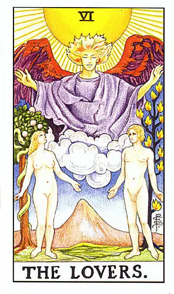
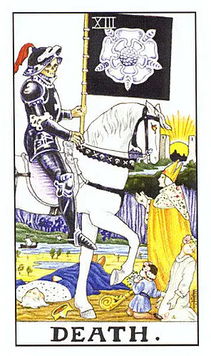
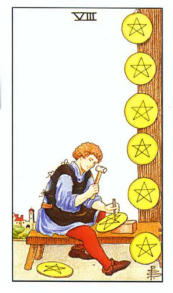
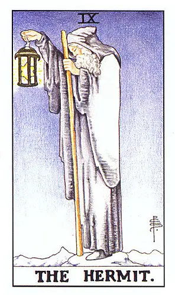

📚 四角度解读法
任何一张牌，按这四个角度快速解读
🔥 元素属性
- 权杖（火）→ 行动、热情、竞争
- 圣杯（水）→ 情感、关系、直觉
- 宝剑（风）→ 思考、冲突、沟通
- 星币（土）→ 物质、工作、金钱
🔢 数字阶段
- 1：开始、机会
- 2：选择、平衡
- 3：合作、初步成果
- 4：稳定、占有
- 5：冲突、失去
- 6：和谐、分享
- 7：挑战、评估
- 8：行动、速度
- 9：接近完成、独处
- 10：完成、过犹不及
🃏 大牌关键词
- 愚人：冒险、新开始、天真
- 魔术师：行动力、资源整合
- 女祭司：直觉、隐藏知识
- 皇后：丰盛、母性
- 皇帝：结构、权威
- 教皇：传统、指导
- 恋人：选择、价值观
- 战车：意志、控制
- 力量：耐心、柔克刚
- 隐士：内省、寻求指引
- 命运之轮：转折、机遇
- 正义：平衡、因果
- 倒吊人：牺牲、换视角
- 死神：结束与开始
- 节制：调和、耐心
- 恶魔：束缚、物质欲望
- 高塔：突变、崩塌
- 星星：希望、疗愈
- 月亮：不安、幻觉
- 太阳：成功、快乐
- 审判：觉醒、召唤
- 世界：完成、圆满
🔄 逆位简化记忆
- 能量不足 → 延迟、缺乏、不敢做
- 能量过度 → 纠缠、固执、失控
- 向内化 → 需要反省、不向外显
📖 实战案例解读
案例1：问感情，抽到恋人正位

恋人
选择、爱情、价值观
步骤1
元素：大牌（无元素，看核心含义）
步骤2
数字：无数字，看大牌关键词
步骤3
关键词：选择、爱情、价值观
步骤4
逆位：正位，能量充足
综合解读：你正面临感情上的重要选择，这个人与你的价值观很契合，是一段真诚的关系，可以认真考虑。
案例2：问工作，抽到死神正位

死神
结束、转变
步骤1
元素：大牌（无元素）
步骤2
数字：无数字
步骤3
关键词：结束、转变
步骤4
逆位：正位，需要接受转变
综合解读：目前的工作阶段即将结束，虽然可能让人不舍，但这是新的开始的契机，拥抱变化，做好迎接新机会的准备。
案例3：问财运，抽到星币8正位

星币8
行动、速度
步骤1
元素：星币（土）→ 物质、工作、金钱
步骤2
数字：8 → 行动、速度
步骤3
（小牌，无大牌关键词）
步骤4
逆位：正位，能量充足
综合解读：财运不错，通过认真工作和技能提升会有稳定收入，需要专注努力，一份耕耘一份收获。
案例4：问学习，抽到隐士逆位

隐士
内省、寻求指引
逆位
步骤1
元素：大牌（无元素）
步骤2
数字：无数字
步骤3
关键词：内省、寻求指引
步骤4
逆位：能量过度或向内化 → 可能太孤僻、拒绝帮助
综合解读：学习上不要过于闭门造车，可以多向老师同学请教，避免陷入自我怀疑的状态，适当的交流有助于进步。